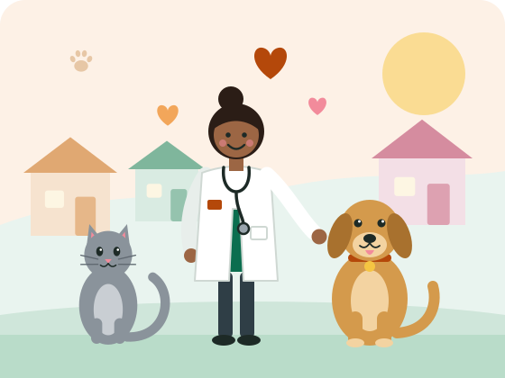

Seja voluntário
Doe algumas horas por semana nos mutirões, nas feiras de adoção, nas escolas ou na comunicação da ONG.
Quero ser voluntárioONG de proteção animal e Saúde Única
O Instituto Elo Animal une medicina veterinária, educação e voluntariado para garantir saúde e dignidade a cães e gatos de famílias em situação de vulnerabilidade e, assim, proteger também a saúde das pessoas.

Somos uma organização sem fins lucrativos criada em 2018 por médicas-veterinárias, estudantes e moradores do Bairro Esperança. Atuamos com base no conceito de Saúde Única: a saúde dos animais, das pessoas e do ambiente está conectada. Por isso, cada castração, consulta ou palestra também previne doenças que afetam a comunidade.
Promover o bem-estar de cães e gatos e a saúde da comunidade por meio de atendimento veterinário acessível, educação e adoção responsável.
Ser referência regional em proteção animal com impacto social: bairros sem abandono e tutores bem informados.
Doe algumas horas por semana nos mutirões, nas feiras de adoção, nas escolas ou na comunicação da ONG.
Quero ser voluntárioCom R$ 30 por mês você custeia a vacinação de um animal resgatado. Aceitamos doações únicas ou mensais.
Quero doarTodos os animais são entregues castrados, vacinados e vermifugados, com acompanhamento após a adoção.
Conhecer o projetoPublicamos todo ano o relatório de atividades e a prestação de contas aprovada em assembleia. Veja como cada R$ 100 doados foram aplicados em 2025:
Sede e clínica social
Rua das Acácias, 250 – Bairro Esperança
Fortaleza – CE, CEP 60000-000
Telefone: (85) 0000-0000
E-mail: contato@institutoeloanimal.org.br
Horário de atendimento
Segunda a sexta, das 8h às 17h
Sábados, das 8h às 12h
Encontrou um animal ferido ou em situação de maus-tratos? Ligue para nós ou procure o órgão ambiental do seu município.